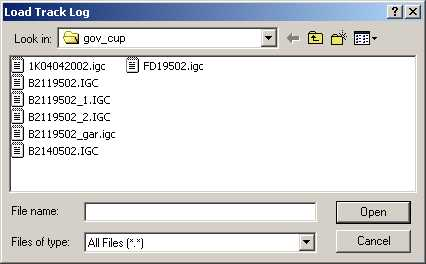

IGCview Files HelpIGCview Files Help
IGCview Files HelpIGCview Files HelpThese notes explain how to open and save your log files.
The left-side file buttons which currently appear are:
 |
Files Help. That button shows this help information. |
 |
Load IGC File From the Web. Some IGC files are available on the IGCview web site, and are also installed on your PC with the rest of the application when you've done a local install. Clicking on this button will bring up a menu of IGC files, and one click will load each tracklog file into IGCview. This button should load the pre-prepared files without any fuss, whether you've accessed IGCview via the website or are running it locally. This button is the minimum hassle way of loading an IGC file, but does not give you the 'browse the disk' view that you'd expect (see next option below). One day, we should be able to make IGCview easily available to competition organizers, so that the competitors' flight logs are browsable right from the web. In the meantime, you're stuck with my few lousy flights. |
 |
Load IGC File From your PC.
This is the usual 'open file' function you would expect of any IGC-file viewing application, which
will prompt you with the usual file dialog shown below:  Unlike other packages, IGCview can both be run from a website, and load IGC files directly from the internet (via the button listed above). The downside is that to load
local IGC files from your PC, some simple setup must be done to give IGCview permission. If this isn't
done, then you'll get the security error displayed on this page.
Instructions on how to permit IGCview to access your local files are given in the
installation guide.
|
 |
Save IGC File. The most common use for IGCview is to read IGC files.
However, there are two circumstances in which you might want to save the current
primary IGC file:
button above.
|
 |
Select Tracks. This button allows you to select among the multiple IGC files
you have loaded, presenting the following dialog: Note that IGCview allows one loaded log to be selected as primary, and multiple loaded logs to be selected as secondary. An unselected log will not be displayed, but will remain on the list for later selection if desired. All selected logs will be raced together in the 'replay' mode, while 'flight data'  will compare the primary log with the
average of the secondaries. will compare the primary log with the
average of the secondaries.
|
| Clear Tracks. |